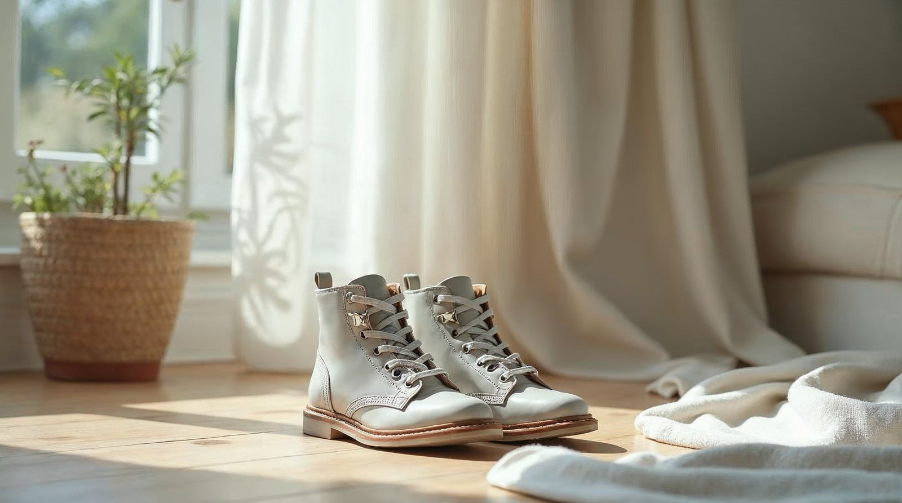
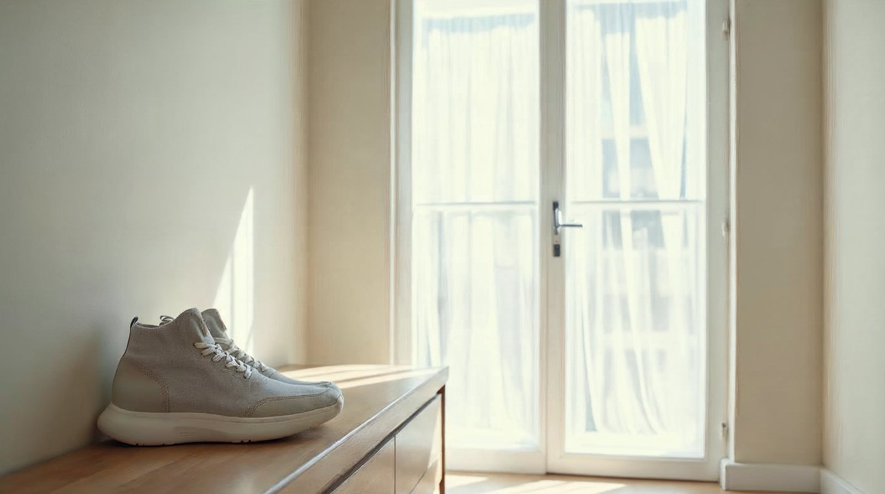
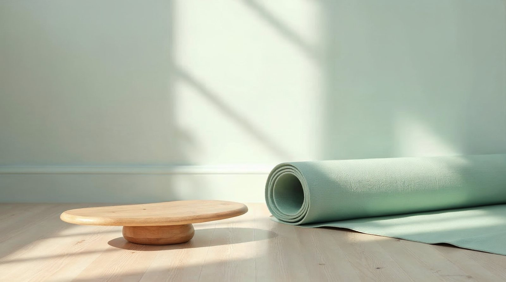
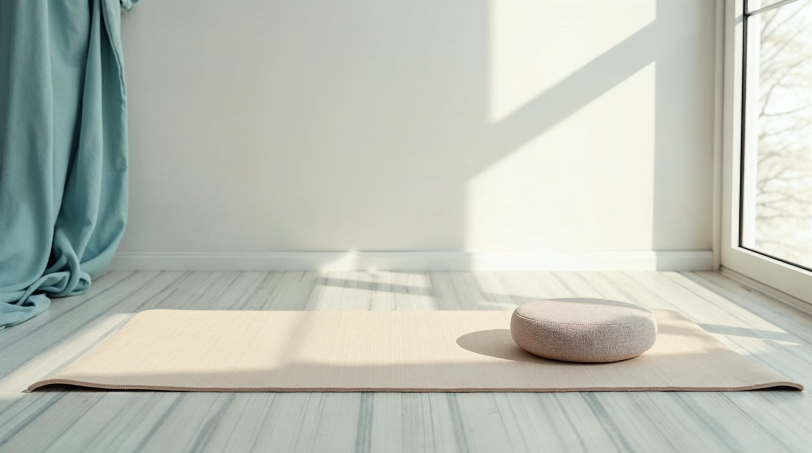
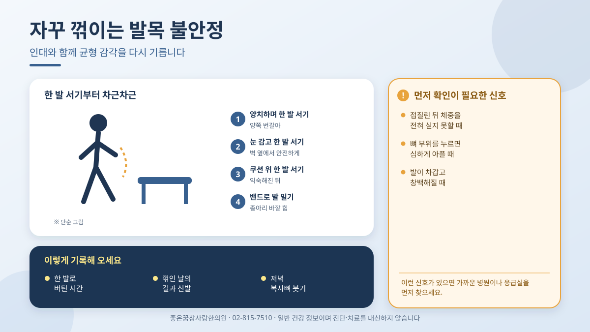

이종호 한의사 감수좋은꿈참사랑한의원 대표원장 (한의사 면허번호 19769)발행 2026-11-26 · 수정 2026-11-26
이 글의 차례
보도블록 턱을 살짝 잘못 디뎠을 뿐인데 발목이 또 바깥으로 꺾입니다. 크게 붓지는 않았지만 순간 철렁하고, 그 뒤로 한동안 걸음을 조심하게 됩니다. 예전에 한 번 크게 삔 뒤로 그 발목이 영 믿음직스럽지 않다고 말씀하시는 분이 많습니다.
발목을 한 번 크게 삐고 나면, 통증과 붓기는 몇 주 만에 가라앉아도 '불안한 느낌'은 오래 남는 경우가 있습니다. 울퉁불퉁한 길이나 내리막에서 발목이 흔들리고, 운동할 때는 보호대 없이는 마음이 놓이지 않습니다.
이렇게 발목이 반복해서 꺾이거나 늘 불안한 상태가 이어지는 것을 만성 발목 불안정이라고 부릅니다. 인대가 늘어난 채로 아문 것도 이유가 되지만, 그 못지않게 발목의 위치를 느끼는 감각과 순간적으로 버티는 근육의 반응이 흐려진 것이 큰 몫을 합니다.
반가운 점은 이 감각과 반응은 연습으로 다시 기를 수 있다는 것입니다. 오늘은 발목이 왜 자꾸 꺾이는지, 집에서 어떤 순서로 균형을 다시 길러 가는지를 차근차근 말씀드리겠습니다.

발목은 무엇이 붙잡고 있나요
발목 바깥쪽에는 바깥 복사뼈에서 발목 아래 목말뼈(거골)와 발뒤꿈치뼈로 이어지는 짧은 인대 몇 가닥이 있습니다. 발목이 바깥으로 꺾일 때 가장 먼저 늘어나거나 찢어지는 것이 이 인대들, 그중에서도 앞쪽에 있는 인대입니다.
인대만 발목을 붙잡는 것은 아닙니다. 종아리 바깥쪽 근육은 발목이 꺾이려는 순간 반대로 당겨 버텨 주고, 인대와 관절 안의 감각 신호는 '지금 발목이 어느 쪽으로 기울고 있다'는 정보를 뇌에 보내 이 반응을 깨웁니다.
정리하면 발목은 인대라는 끈, 근육이라는 버팀대, 감각이라는 경보 장치가 함께 지키는 관절입니다. 만성 발목 불안정은 이 셋 가운데 하나 이상이 제 역할을 충분히 하지 못하는 상태라고 보시면 됩니다.
왜 한 번 삔 발목이 자꾸 다시 꺾일까요
첫 번째 이유는 인대가 늘어난 채 아무는 경우입니다. 처음 삐었을 때 붓기가 빠지자마자 평소처럼 걷고 뛰면, 인대가 충분히 단단해지기 전에 다시 당겨져 느슨한 상태로 남기 쉽습니다.
두 번째이자 더 흔한 이유는 감각과 반응이 흐려진 것입니다. 인대를 다치면 그 안의 감각 신호도 함께 다쳐, 발목이 기울기 시작해도 뇌가 늦게 알아차립니다. 근육이 버티려 할 때는 이미 꺾인 뒤인 셈입니다.
세 번째는 종아리 바깥쪽 근육과 엉덩이 근육이 약해진 것입니다. 삔 뒤 발목을 아끼며 지내는 동안 근육이 빠지고, 착지할 때 골반과 무릎이 흔들리면서 그 흔들림이 결국 발목으로 내려옵니다.
여기에 굽이 높거나 바닥이 좁은 신발, 밑창 바깥쪽이 닳은 운동화, 울퉁불퉁한 길이 더해지면 같은 쪽이 반복해서 꺾입니다. 꺾일 때마다 인대와 감각이 조금씩 더 흐려지니, 고리를 끊어 주는 것이 중요합니다.
발목이 불안할 때 흔히 함께 오는 것
복사뼈 바깥 앞쪽이 오래 뻐근하거나, 오래 걸은 날 저녁에 그 자리가 살짝 붓는 분이 많습니다. 발목을 끝까지 젖히면 앞쪽이 걸리는 느낌이 든다는 분도 계십니다.
발목을 믿지 못하니 걸음이 조심스러워지고, 반대쪽 다리에 체중을 더 싣게 됩니다. 그러다 보면 무릎, 골반, 허리까지 피곤해지는 경우가 있어, 발목을 오래 앓은 분은 다른 곳의 불편도 함께 여쭙습니다.
계단을 내려가거나 어두운 길을 걸을 때 유독 불안하다는 이야기도 자주 듣습니다. 눈으로 발밑을 확인하지 못하면 흐려진 발목 감각이 더 드러나기 때문입니다.
다른 발목 문제와는 어떻게 다른가요
발목 안쪽 복사뼈 아래가 아프고 발바닥이 저리거나 화끈거리면 발목 터널 증후군을, 아킬레스건 쪽이 아프면 힘줄 문제를 생각합니다. 만성 발목 불안정은 주로 바깥쪽이 불안하고 꺾이는 것이 중심입니다.
삔 뒤에도 특정 뼈를 누를 때 심하게 아프거나, 몇 달이 지나도 붓기와 통증이 한자리에서 줄지 않는다면 작은 뼛조각이나 관절 안 연골 문제가 숨어 있을 수 있습니다. 이런 경우에는 정형외과 검사를 함께 받아 보시도록 안내드립니다.
불안정이 심하고 운동 재활을 충분히 해도 일상에서 자꾸 꺾인다면, 정형외과에서 인대를 보강하는 수술을 상의하는 경우도 있습니다. 어떤 길이 맞을지는 검사와 경과를 보고 정형외과 선생님과 정하시면 됩니다.
집에서 해 볼 수 있는 간단한 확인
벽이나 식탁 옆에 서서 한 발로 서 보세요. 눈을 뜬 상태로 30초를 버티는지, 버틸 때 발목이 얼마나 흔들리는지 봅니다. 그다음 같은 동작을 반대쪽 발로 해서 양쪽을 비교합니다.
익숙하다면 눈을 감고 같은 동작을 해 봅니다. 눈을 감으면 발목 감각에 더 기대야 해서, 불안정한 쪽은 몇 초 만에 흔들리거나 발이 바닥에 닿는 경우가 많습니다. 넘어지지 않도록 손 닿는 곳에 기댈 곳을 꼭 두세요.
양쪽 차이가 크다면 그것이 바로 연습할 거리입니다. 처음 버틴 시간을 적어 두시면 몇 주 뒤 얼마나 달라졌는지 비교하는 기준이 됩니다.
먼저 이렇게 여쭙니다
처음 오시면 저는 대략 이런 순서로 여쭙니다. 미리 떠올려 오시면 진료가 훨씬 수월해집니다.
- 처음 크게 삔 때는 언제쯤이고, 그때 어떻게 지내셨나요?
- 그 뒤로 몇 번이나 다시 꺾였나요? 최근 꺾인 때는 언제인가요?
- 어떤 길, 어떤 동작에서 가장 불안한가요?
- 평소 신발은 어떤 것을 주로 신으시나요?
- 무릎, 골반, 허리에 함께 불편한 곳이 있나요?
- 정형외과에서 사진이나 검사를 받으신 적이 있나요?
자주 신는 신발을 신고 오시거나 밑창 사진을 찍어 오시면 닳은 모양을 함께 볼 수 있습니다. 발이 어느 쪽으로 체중을 싣는지 짐작하는 데 도움이 됩니다.
일상에서 먼저 해 볼 수 있는 것
만성 발목 불안정의 중심은 균형 연습입니다. 가끔 길게 하기보다 하루 몇 분이라도 꾸준히 이어 가는 쪽이 몸에 익기 쉽습니다. 아래 순서대로 쉬운 것부터 하나씩 올라가 보세요.
- 이를 닦는 동안 한 발로 서기(양치 시간 동안 발 바꿔 가며)
- 익숙해지면 눈 감고 한 발로 서기
- 쿠션이나 접은 이불 위에서 한 발로 서기
- 한 발로 선 채 반대쪽 발로 앞, 옆, 뒤를 가볍게 찍기
- 발뒤꿈치 들어 올리기를 천천히 열다섯 번
- 고무밴드를 발에 걸고 발바닥을 바깥으로 미는 운동
모든 연습은 넘어지지 않도록 벽이나 식탁 옆에서 하시고, 발목이 아프거나 부을 정도로 하지는 않습니다. 쉬운 단계를 30초씩 편하게 버티게 되면 다음 단계로 넘어갑니다. 최근 다시 크게 삐었거나 인대 수술을 받았다면, 담당 병원에서 시작해도 된다는 말을 들은 뒤에 하세요.
균형 연습이 익숙해지면 일상 동작에 섞어 보세요. 설거지를 하며 한 발로 서 있기, 엘리베이터를 기다리며 발뒤꿈치 들기처럼 따로 시간을 내지 않아도 되는 방법이 오래 이어 가기 쉽습니다.
연습하는 동안 발목 앞쪽이 뻐근하거나 종아리가 당기는 것은 근육이 일하고 있다는 신호인 경우가 많습니다. 다만 복사뼈 주변이 붓거나 찌르는 통증이 생긴다면 단계를 한 칸 낮춰 주세요.
신발은 굽이 낮고 바닥이 넓으며 발목을 잘 감싸는 것이 편합니다. 슬리퍼나 굽 높은 신발로 오래 걷는 날은 줄이고, 등산이나 운동처럼 꺾일 위험이 큰 날에는 발목을 잡아 주는 신발이나 보호대를 함께 써 보세요.
보호대는 꺾이는 것을 막아 주는 데 도움이 되지만, 늘 차고만 있으면 발목이 스스로 버티는 연습을 할 기회가 줄어듭니다. 평소 걸을 때는 맨발목으로 연습하고, 위험한 활동을 할 때만 쓰는 쪽을 권합니다.

생활 속에서 발목을 지키는 습관
길을 걸을 때 휴대폰을 보며 걷는 습관은 발목에 생각보다 큰 부담이 됩니다. 발밑을 보지 않으면 턱이나 패인 곳을 늦게 알아차려, 흐려진 발목 감각으로 갑작스러운 기울기를 버텨야 하기 때문입니다.
계단을 내려갈 때는 난간을 잡고 발 전체를 계단 위에 올려 디디세요. 발 앞쪽만 걸친 채 내려가면 발목이 쉽게 꺾입니다. 어두운 길이나 비 오는 날에는 걸음을 조금 줄이고 속도를 늦추는 것만으로도 꺾일 일이 줄어듭니다.
등산을 하신다면 내리막에서 특히 조심해 주세요. 지친 다리로 내려올 때 발목이 가장 많이 꺾입니다. 스틱을 쓰고, 내리막에서는 보폭을 줄이며, 쉬는 시간을 오르막보다 자주 가지시길 권합니다.

종아리와 엉덩이 근육은 왜 함께 길러야 하나요
발목이 꺾이려는 순간 가장 먼저 버티는 것은 종아리 바깥쪽 근육입니다. 이 근육이 약하면 감각이 신호를 보내도 버틸 힘이 모자랍니다. 고무밴드로 발바닥을 바깥으로 미는 운동이 이 근육을 기르는 데 쓰입니다.
엉덩이 바깥쪽 근육은 한 다리로 섰을 때 골반이 처지지 않도록 붙잡습니다. 골반이 흔들리면 무릎과 발목이 그 흔들림을 받아 내야 하니, 옆으로 누워 다리를 드는 운동을 균형 연습과 함께 해 주시면 좋습니다.
발목 하나만 보면 놓치기 쉬운 부분이지만, 실제로는 엉덩이에서 발끝까지 한 줄로 이어진 힘이 발목을 지킵니다. 그래서 진료실에서도 발목과 함께 골반과 무릎의 정렬을 꼭 살펴봅니다.
다시 꺾였을 때는 어떻게 하나요
연습 중에 발목이 다시 꺾였다면, 처음 며칠은 다친 발목을 쉬게 하고 붓기를 가라앉히는 데 집중합니다. 수건에 싼 찬 팩을 대고, 앉거나 누울 때 발을 조금 높이 올려 두세요.
붓기가 가라앉기 시작하면 아프지 않은 범위에서 발목을 천천히 움직이고, 체중을 조금씩 실어 걷습니다. 이때 다시 균형 연습을 쉬운 단계부터 시작하는 것이 반복의 고리를 끊는 핵심입니다.
다시 꺾인 뒤에는 실망하기 쉽지만, 연습이 헛된 것은 아닙니다. 쉬운 단계로 돌아가 다시 올라가는 속도는 처음보다 빠를 수 있으니, 기록을 이어 가며 차분히 다시 시작해 보세요.
한의원에서 함께 살필 수 있는 경우
- 예전에 삔 발목이 오래 뻐근하고 걸으면 쉽게 붓는 경우
- 한 번 삔 뒤로 같은 쪽 발목이 자꾸 꺾이는 경우
- 발목을 감싸고 걷다 보니 무릎, 골반, 허리까지 불편해진 경우
- 종아리와 발바닥이 늘 굳어 있고 발목 움직임이 뻑뻑한 경우
- 균형 연습을 하면서 발목 주변 긴장과 회복을 함께 보고 싶은 경우
좋은꿈참사랑한의원에서는 모든 분의 맥을 먼저 짚으며 다친 경과와 불안한 동작을 여쭙습니다. 그다음 발목 주변을 직접 눌러 보고, 움직임 범위와 종아리 근육의 긴장, 한 다리로 섰을 때의 흔들림, 걸음과 골반의 균형을 함께 봅니다.
진찰한 내용을 바탕으로 발목과 종아리 주변의 긴장을 줄이는 침, 온열 관리, 걸음과 골반의 움직임을 살피는 추나 가운데 지금 상태에 맞는 것을 고릅니다. 인대 주변이 오래 예민하게 남아 있다면 체외충격파 상담을 함께 드리기도 합니다. 무엇을 할지는 진찰 뒤에 정합니다.
정형외과 치료나 재활을 받고 계신다면 그대로 이어 가시면 되고, 드시는 약은 임의로 멈추지 않도록 안내합니다. 한약을 상의할 때는 드시는 약을 먼저 확인하고 신중히 정합니다. 인대 수술로 몸에 금속 고정물이 있다면 온열 장비나 체외충격파 전에 미리 말씀해 주세요.
이렇게 기록해 오시면 상담이 쉬워집니다
발목의 불안함은 숫자로 적어 두면 변화가 잘 보입니다. 2~3주 정도만 간단히 적어 보세요.
- 한 발로 서서 버틴 시간(눈 뜨고, 눈 감고, 양쪽 각각)
- 발목이 휘청하거나 꺾인 날과 그때의 길·신발
- 오래 걸은 날 저녁 복사뼈 주변 붓기
- 균형 연습을 한 날 표시
양쪽 기록을 나란히 적으면 다친 쪽이 얼마나 따라왔는지가 한눈에 보입니다. 몇 주 뒤 처음 기록과 견주어 보면 달라진 점을 스스로 확인하기 쉽고, 그 확인이 발목을 다시 믿어 보는 출발점이 되기도 합니다.

발목을 다시 믿게 되기까지
만성 발목 불안정은 한 번에 해결되는 문제라기보다, 흐려진 감각과 근육의 반응을 조금씩 되살리는 과정입니다. 매일 몇 분의 연습을 쌓아 가며, 울퉁불퉁한 길에서도 발목이 먼저 버텨 주는 힘을 조금씩 길러 갈 수 있습니다.
발목을 한 번 다쳤다고 해서 평생 조심만 하며 지내실 필요는 없습니다. 연습으로 감각과 근육을 다시 깨우면서, 좋아하던 산책과 운동을 다시 이어 갈 길을 함께 찾아볼 수 있습니다.
이번 주에는 양치하는 동안 한 발로 서기, 이것 하나만 먼저 시작해 보세요. 다음에 오시면 버틴 시간 기록을 함께 보며 다음 단계를 정하겠습니다.
이런 증상은 먼저 확인이 필요합니다
- 발목을 접질린 뒤 체중을 전혀 싣지 못하거나 뼈 부위를 누를 때 심하게 아픈 경우
- 접질린 뒤 발이 차갑거나 창백해지거나, 감각이 둔해지는 경우
이런 신호가 있으면 한의원보다 가까운 병원이나 응급실을 먼저 찾으세요.
함께 읽으면 좋은 글
- 발목을 자주 접질리는 반복 발목 염좌와 발목 불안정은 어떻게 살피나요?
- 예전에 발목을 자주 삐었는데 요즘 무릎과 허리가 불편하면 연관이 있나요?
- 아침마다 내리막길로 출근하는데 정강이 앞쪽과 발목이 뻐근할 때는 어떻게 살피나요?
- 안쪽 복사뼈 아래가 저리고 발바닥이 화끈거리는 발목 터널 증후군(족근관 증후군)은 어떻게 살피나요?

여쭙는 것
- 처음 크게 삔 때는 언제쯤이고, 그때 어떻게 지내셨나요?
- 그 뒤로 몇 번이나 다시 꺾였나요? 최근 꺾인 때는 언제인가요?
- 어떤 길, 어떤 동작에서 가장 불안한가요?
생활에서 해 볼 것
- 이를 닦는 동안 한 발로 서기(양치 시간 동안 발 바꿔 가며)
- 익숙해지면 눈 감고 한 발로 서기
- 쿠션이나 접은 이불 위에서 한 발로 서기
한의원에서 함께 살필 것
- 예전에 삔 발목이 오래 뻐근하고 걸으면 쉽게 붓는 경우
- 한 번 삔 뒤로 같은 쪽 발목이 자꾸 꺾이는 경우
- 발목을 감싸고 걷다 보니 무릎, 골반, 허리까지 불편해진 경우
먼저 확인이 필요한 신호
- 발목을 접질린 뒤 체중을 전혀 싣지 못하거나 뼈 부위를 누를 때 심하게 아픈 경우
- 접질린 뒤 발이 차갑거나 창백해지거나, 감각이 둔해지는 경우
한눈에 보는 표
| 구분 | 핵심 |
|---|---|
| 여쭙는 것 | 처음 크게 삔 때는 언제쯤이고, 그때 어떻게 지내셨나요? 그 뒤로 몇 번이나 다시 꺾였나요? 최근 꺾인 때는 언제인가요? |
| 생활에서 해 볼 것 | 이를 닦는 동안 한 발로 서기(양치 시간 동안 발 바꿔 가며) 익숙해지면 눈 감고 한 발로 서기 |
| 한의원에서 함께 살필 것 | 예전에 삔 발목이 오래 뻐근하고 걸으면 쉽게 붓는 경우 한 번 삔 뒤로 같은 쪽 발목이 자꾸 꺾이는 경우 |
| 먼저 확인이 필요한 신호 | 발목을 접질린 뒤 체중을 전혀 싣지 못하거나 뼈 부위를 누를 때 심하게 아픈 경우 접질린 뒤 발이 차갑거나 창백해지거나, 감각이 둔해지는 경우 |
자주 묻는 질문
발목 보호대는 늘 차고 다니는 게 좋은가요?
등산이나 운동처럼 꺾일 위험이 큰 활동에는 도움이 될 수 있습니다. 다만 늘 차고만 있으면 발목이 스스로 버티는 연습 기회가 줄어, 평소에는 균형 연습을 함께 하시길 권합니다.
균형 연습은 얼마나 이어 가야 하나요?
사람마다 다릅니다. 매일 몇 분씩 몇 주 꾸준히 이어 가 보시고, 버틴 시간을 적어 두면 달라지는 점을 스스로 확인하기 쉽습니다.
예전에 삔 발목인데 지금 와서 한의원 진료를 받아도 되나요?
오래전에 다친 발목이라도 지금 불안하거나 뻐근하다면 살펴볼 수 있습니다. 발목과 함께 무릎, 골반, 걸음까지 함께 봅니다.
수술이 필요한 경우도 있나요?
균형 연습과 재활을 충분히 해도 일상에서 계속 꺾인다면 정형외과에서 수술을 상의하는 경우가 있습니다. 결정은 검사와 경과를 보고 정형외과 선생님과 함께 하시면 됩니다.
좋은꿈참사랑한의원은 재진 때 지난번 이야기부터 이어서 여쭙니다. 진료시간과 예약은 오시는 길에서 확인하세요.
어디서 상담받을 수 있나요?
좋은꿈참사랑한의원은 서울 동작구 만양로2길 2 신성빌딩 3층·5층(서울 동작구 상도동, 7호선 상도역 3번 출구 근처)에 있습니다. 한의사 3명(이종호 대표원장, 조영기 수석진료원장, 정원영 진료원장)이 진료합니다. 진료시간은 평일 09:30~20:00(점심 13:00~14:00), 토·일·공휴일 09:30~15:00이며, 방문 전 전화로 확인을 권합니다. 예약은 네이버 예약, 카카오톡 상담, 전화 02-815-7510로 받습니다.
이 글은 일반적인 건강 정보이며 개인의 진단이나 치료를 대신하지 않습니다. 증상이 있거나 복용 중인 약이 있다면 진료를 통해 확인하세요. 치료 효과는 개인마다 다를 수 있습니다.
작성 기준: 일반적으로 알려져 있는 건강 정보를 참고해 정리했습니다(대표원장 감수). 증상 기록은 1~2주 동안 하루 1회, 비슷한 시간에 적어 오시면 지난 상태와 비교하기 쉽습니다.